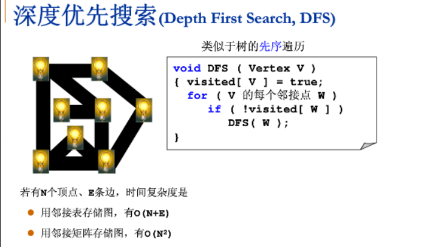

图
一些概念
一个图（一般记作{\displaystyle G}G）由两类元素构成，分别称为顶点（或节点、结点）和边。每条边有两个顶点作为其端点，我们称这条边“连接”了它的两个端点
分类
- 有向图与无向图
- 有权图与无权图
表示方法
- 邻接矩阵

boolean[][] g;
// n代表顶点的数量，v代表边的数量
int n, m;
// 判断两个顶点是否存在边
boolean hasEdge(int v, int w) {
return g[v][w];
}
// 给两个顶点增加一条边
void addEdge(int v, int w) {
if (hasEdge(v, w)) {
return;
}
g[v][w] = true;
if (!directed) {
g[w][v] = true;
}
m++;
}
//
- 邻接表

List<List<Integer>> g;
void addEdge(int v, int w) {
g.get(v).add(w);
if (!directed && v != w) {
g.get(w).add(v);
}
m++;
}
boolean hasEdge(int v, int w) {
for (int i = 0; i < g.get(v).size(); i++) {
if (g.get(v).get(i).equals(w)) {
return true;
}
}
return false;
}
邻接表适合表示稀疏的图，邻接矩阵适合表示稠密的图
搜索
- 深度优先

for (int i = 0; i < graph.V(); i++) {
// 对每个节点进行深度优先遍历
if (!visited[i]) {
dfs(i);
}
}
void dfs(int v) {
visited[v] = true;
id[v] = count;
// 对传进来的节点所连接的节点再进行DFS
GraphIterator iterator = graph.iterator(v);
for (int i = iterator.begin(); !iterator.end(); i = iterator.next()) {
if (!visited[i]) {
dfs(i);
}
}
}
- 广度优先

两个算法的不同之处只在于获取下一个节点的方式不一样
- 广度优先下一个节点是最早加入的节点
- 深度优先下一个节点是最晚加入的节点
连通分量
无向图G的极大连通子图称为G的连通分量
有向图
表示
同样也是使用邻接表表示
可达性
DFS 与 BFS 同样适用于有向图
环
- 拓扑排序
将所有顶点排序，使得所有的有向边均从排在前面的元素指向后面的元素
强连通性
如果两个顶点互相可达，则称它们是强连通的
最小生成树
一副连通加权无向图中一棵权值最小的生成树
- 贪心算法
找到最小生成树的一条边，不断重复，直到找到所有最小生成树的所有边
Prim算法
每次将一个与树顶点连接但不在树中且权值最小的边加入树

kruskal算法
每次将权值最小的且不会构成环的边加入生成树


最短路径
找到从一个顶点到另一个顶点成本最小的路径
Dijkstra算法